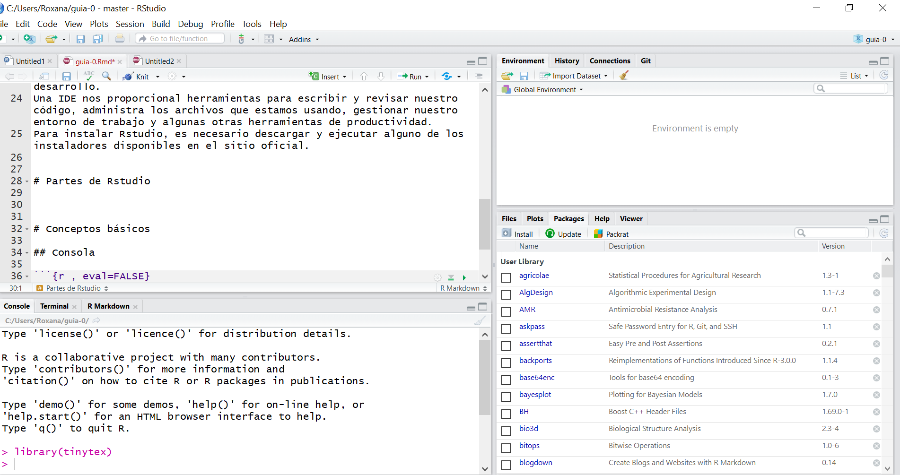
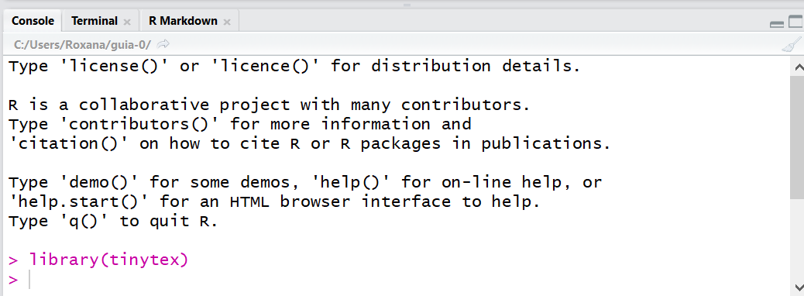
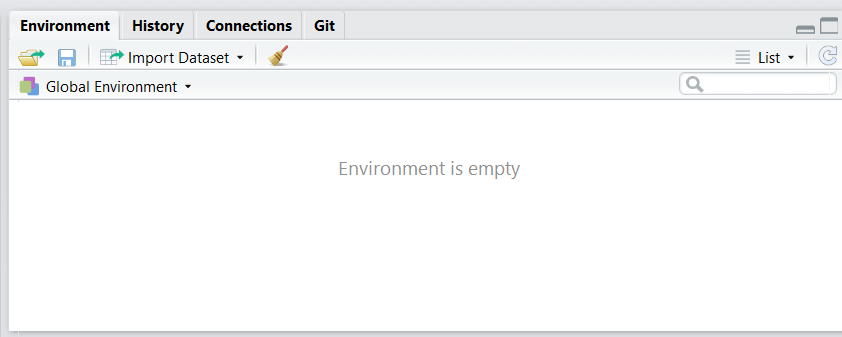
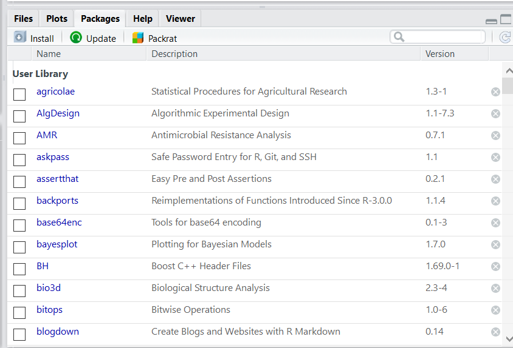

Capítulo 3 R y Rstudio
3.1 R
R es un lenguaje de programación y entorno computacional dedicado a la estadística. Es un lenguaje de programación porque nos permite dar instrucciones, usando código, a nuestros equipos de cómputo para que se realicen tareas específicas. Cuando instalamos R en nuestra computadora, estamos instalando un entorno computacional. R es diferente a otros lenguajes de programación que por lo general están diseñados para realizar muchas tareas diferentes, R fue creado con el único propósito de hacer estadística. Para instalar R lo podemos hacer desde el CRAN:
https://cran.r-project.org/bin/windows/base/
También se encuentran las versiones disponibles para Linux y Mac.
CRAN es el acrónimo para Cromprehensive R Archive Network y es un repositorio oficial de paquetes.
3.2 Rstudio
Rstudio es una IDE para R. Una IDE es un entorno integrado de desarrollo. Una IDE nos proporcional herramientas para escribir y revisar nuestro código, administra los archivos que estamos usando, gestionar nuestro entorno de trabajo y algunas otras herramientas de productividad. Para instalar Rstudio, es necesario descargar y ejecutar alguno de los instaladores disponibles en el sitio oficial.
3.2.1 Partes de Rstudio
Al abrir Rstudio se visualiza lo siguiente

3.2.1.1 Fuente
- Es en donde se escribe el código para documentarlo en scripts.
- En primer lugar se detallan las librerías con las que se trabajan.
- Para comentar el código usamos numeral #

3.2.1.2 Consola
- Es la parte más importante porque es donde nuestro código es interpretado.
- Podemos escribir directamente aquí nuestro código y será ejecutado.

3.2.1.3 Entorno, Historia, Conexiones y Git
- En esta parte se guardan las bases de datos, las funciones del entorno de trabajo.
- También desde allí podemos importar bases de datos.
- Para limpiar nuestro entorno de trabajo podemos hacerlo con el símbolo de la escobita.

3.2.1.4 Archivos, Gráficos, Paquetes, Ayuda, Visor
- En esta sección podemos ver los archivos la carpeta que funciona como entorno de trabajo.
- Se pueden visualizar los gráficos que hemos realizado.
- Se ofrece una lista de paquetes instalados y cargados en nuestro entorno de Rstudio.
- La ayuda nos permite ver la documentación de una determinada librería.
- Finalmente en la pestaña Viewer podemos visualizar documentos de texto o interactivos que realicemos.

3.3 Conceptos básicos en el uso de R
En R, todo es un objeto. Todos los datos y estructuras de datos son objetos. Además, todos los objetos tienen un nombre para identificarlos.
3.3.2 Entorno de trabajo
- Es en donde se guardarán nuestros archivos, scripts y gráficos
## [1] "/home/roxana/guias-tp"- Si quisiéramos definir otro entorno de trabajo
3.3.3 Paquetes
- Un paquete es una colección de funciones diseñadas para atender una tarea específica. Para instalarlos desde el CRAN lo hacemos de la siguiente manera:
- Una vez concluida la instalación podemos usar las funciones de ese paquete mediante
- Para conocer todos los paquetes que tenemos instalados
3.3.4 Scripts
Los scripts son documentos de texto con la extensión .R Son útiles para guardar y poder compartir código.
3.4 Tipos de datos
En R, todo son objetos
Los objetos más simples se llaman atómicos:
- character(cadena de caracteres)
- numeric (números reales)
- integer(números enteros)
- complex (números complejos)
- logical (lógicos o booleanos, toman valores de TRUE o FALSE)
3.5 Estructura de datos
3.5.1 Vectores
Los vectores son arreglos ordenados en los cuales se puede almacenar información de tipo numérico (variable cuantitativa), alfanumérico (variable cualitativa) o lógico (TRUE o FALSE). La función de R para crear un vector es c() y que significa concatenar; dentro de los paréntesis de esta función se ubica la información a almacenar. Una vez construído el vector se acostumbra a etiquetarlo con un nombre corto y representativo de la información que almacena, la asignación se hace por medio del operador <- entre el nombre y el vector.
- Vector de enteros
## [1] 3 2 5## [1] 3 2 5- Vector de decimales
## [1] 3.2 2.4 5.8- Vector de caracteres
## [1] "Ana" "Sofía" "Pedro" "Juan"- Vector de booleanos
## [1] TRUE FALSE TRUE FALSE3.5.2 Matrices
Las matrices son arreglos rectangulares de filas y columnas con información numérica, alfanumérica o lógica. Para construir una matriz se usa la función matrix( ). Por ejemplo, para crear una matriz de 4 filas y 5 columnas (de dimensión 4×5) con los primeros 20 números positivos se escribe el código siguiente en la consola.
## [,1] [,2] [,3] [,4] [,5]
## [1,] 1 5 9 13 17
## [2,] 2 6 10 14 18
## [3,] 3 7 11 15 19
## [4,] 4 8 12 16 203.5.3 Dataframes o Marco de datos
Data.frame es uno de los objetos más utilizados en R, porque permite agrupar vectores con información de diferente tipo (numérica, alfanumérica o lógica) en un mismo objeto, la única restricción es que los vectores deben tener la misma longitud. Para crear un marco de datos se usa la función data.frame()
- Paso 1: creamos los vectores
#Creamos en primer lugar tres vectores
alumnos<-c("Ana","Sofía","Luis", "Pedro","Juan")
edad<-c(15, 19, 13, 18, 20)
deporte<-c(TRUE, TRUE, FALSE, FALSE, TRUE)
comic.fav<-c('Superman', 'Superman', 'Batman', 'Spiderman', 'Batman')- Paso 2: creamos un data.frame a partir de los vectores
## alumnos edad deporte comic.fav
## 1 Ana 15 TRUE Superman
## 2 Sofía 19 TRUE Superman
## 3 Luis 13 FALSE Batman
## 4 Pedro 18 FALSE Spiderman
## 5 Juan 20 TRUE Batman3.6 R como calculadora
3.7 Bibliografía
- R para principiantes. Juan Bosco Mendoza Vega Disponible en http://bit.ly/2Zg0I3M
- El arte de programar en R Julio Sergio Santana & Efraín Mateos Farfán Disponible en http://bit.ly/2N2Y1Y8
- R como calculadora http://ocw.uc3m.es/estadistica/aprendizaje-del-software-estadistico-r-un-entorno-para-simulacion-y-computacion-estadistica/r-como-calculadora